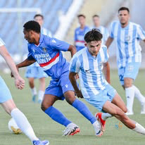
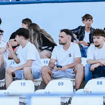
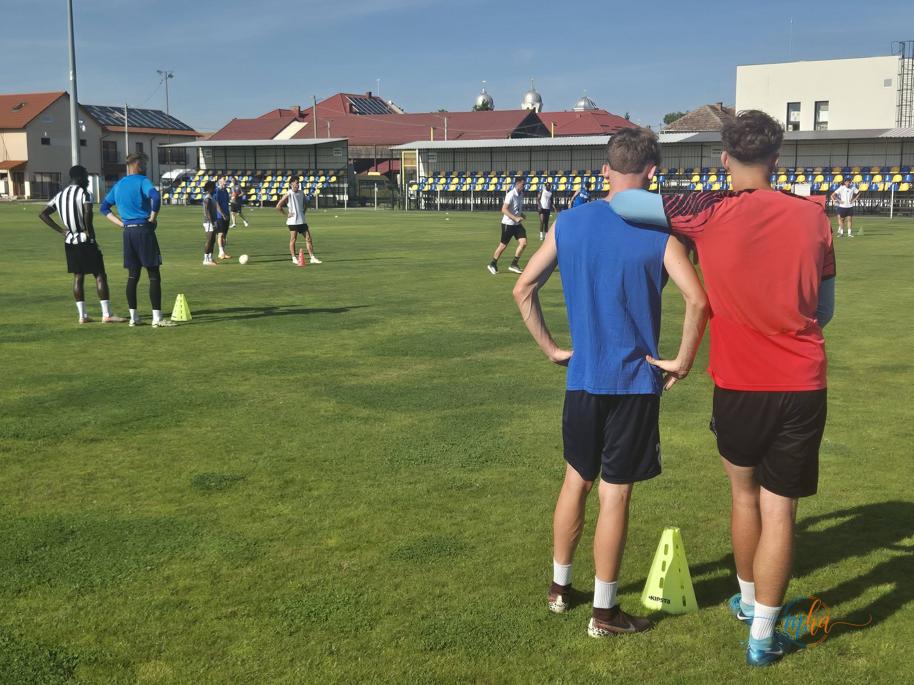
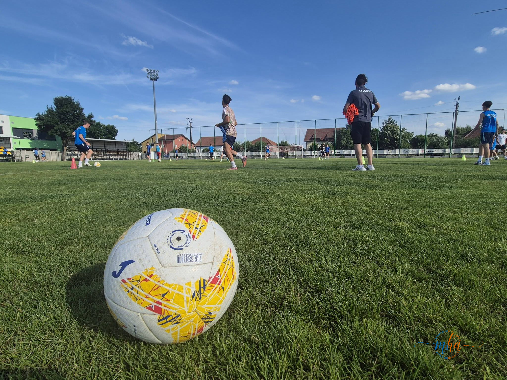

Fotbalul severinean trăiește una dintre cele mai importante zile ale sezonului. Sâmbătă, 27 iunie 2026, de la ora 17:30, Stadionul Municipal din Drobeta-Turnu Severin va găzdui meciul decisiv în lupta pentru promovarea în Liga 3, o partidă în care SC Drobeta își poate îndeplini obiectivul stabilit la începutul campionatului.
Un sezon de muncă, ambiție și determinare
După un campionat în care jucătorii echipei severinene au demonstrat determinare, ambiție și spirit de echipă, formația lui SC Drobeta se află la doar un pas de îndeplinirea obiectivului mult dorit de suporteri: promovarea în Liga 3. Meciul de sâmbătă reprezintă șansa de a transforma munca depusă pe parcursul întregului sezon într-o performanță importantă pentru sportul din Drobeta-Turnu Severin.
Conducerea clubului și staff-ul tehnic au făcut apel la suporteri să fie alături de echipă în acest moment decisiv pentru viitorul fotbalului severinean.
„Avem nevoie de voi! Fiecare încurajare contează, fiecare voce ne împinge mai aproape de victorie. Împreună suntem mai puternici!” — mesajul transmis de reprezentanții SC Drobeta înaintea confruntării pentru promovare.
De ce este important susținerea din tribune
Atmosfera creată în tribune poate reprezenta un factor esențial într-un meci în care fiecare duel, fiecare fază și fiecare gol pot face diferența. Experiența arată că în meciurile cu miză mare, energia transmisă de suporteri din tribune poate influența ritmul jocului și determinarea jucătorilor pe teren.
De aceea, iubitorii fotbalului din Drobeta-Turnu Severin și din întreg județul Mehedinți sunt invitați să umple Stadionul Municipal și să susțină echipa severineană în drumul către Liga 3.
Ce ar însemna promovarea pentru Drobeta-Turnu Severin
Promovarea în Liga 3 ar reprezenta mult mai mult decât o simplă performanță sportivă. Pentru comunitatea locală, calificarea într-un eșalon superior înseamnă recunoașterea muncii depuse de club, de jucători și de staff-ul tehnic, dar și un nou motiv de mândrie pentru oraș și pentru întregul județ Mehedinți.
Un astfel de succes ar putea, de asemenea, să contribuie la creșterea interesului pentru fotbalul juvenil local și la atragerea de noi susținători și parteneri pentru club.
Informații utile pentru suporteri
- 🗓️ Data: Sâmbătă, 27 iunie 2026
- 🕐 Ora: 17:30
- 📍 Locație: Stadionul Municipal, Drobeta-Turnu Severin
- 🏆 Miză: Promovarea în Liga 3
Conducerea SC Drobeta și suporterii echipei speră ca tribunele Stadionului Municipal să fie pline sâmbătă, pentru ca echipa să simtă susținerea întregului oraș în cel mai important meci al sezonului.



